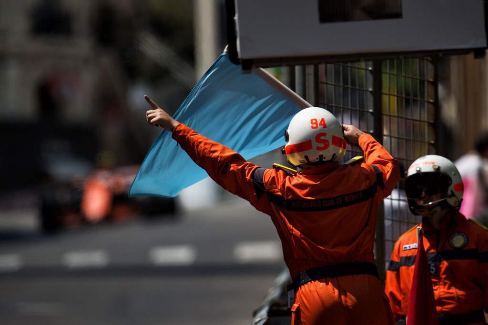

La Formule 1 est bien plus qu'une simple course de voitures : c'est
une fusion parfaite entre technologie de pointe, stratégie astucieuse
et compétences de conduite exceptionnelles. Cependant, pour apprécier
pleinement ce sport, il est essentiel de comprendre les règles et les
drapeaux qui guident chaque course. Sur cette page, nous allons
simplifier cet aspect parfois complexe de la Formule 1 pour les
débutants. Que signifient ces drapeaux colorés agités frénétiquement
par les commissaires de piste et qui permettent de transmettre
instantanément des messages aux pilotes et qui permettent la
coordination entre les commissaires de piste et les pilotes ? Nous
allons ici lister tous les drapeaux existant dans le monde de la
formule 1 et dans tous les sports automobiles en général.

Le drapeau vert
C'est le premier drapeau de chaque course, il indique que la piste est
libre et que les pilotes peuvent reprendre la course. Il est en
principe agité à chaque départ de la course et à chaque reprise de
course après une interruption momentanée causée par exemple par un
crash.
Le drapeau bleu
Le drapeau bleu est montré à un conducteur qui est sur le point d'être
doublé par quelqu'un qui a un tour d'avance, il permet donc de ne pas
gêner un pilote plus rapide et qui n'est en aucun cas en concurrence
avec un autre pilote. Lorsqu'il est montré, le conducteur va se faire
doubler doit permettre à la voiture suivante de le dépasser dès que
possible et, s'il ignore trois avertissements, il sera pénalisé. On
peut souvent entendre les pilotes demander des drapeaux bleus à la
radio lorsqu'ils approchent de la circulation.
Drapeau blanc
Le drapeau blanc est agité pour informer les pilotes qu'il y a un
véhicule beaucoup plus lent devant, et est parfois vu à la fin des
séances d'entraînement pendant que les pilotes effectuent des
entraînements de départ.
Drapeau jaune à rayures rouges
Un drapeau jaune/rouge à rayures immobile est montré pour informer les
conducteurs qu'il y a eu une détérioration des niveaux d'adhérence en
raison d'huile ou d'eau sur la piste. On le voit très rarement.
Drapeau jaune
Le drapeau jaune avertit les pilotes d'un danger. Il signifie que les
conducteurs doivent réduire leur vitesse, ne peuvent pas dépasser et
doivent être prêts à changer de direction en raison d'un danger à côté
ou en partie sur la piste. Les pilotes doivent surtout réduire leur
vitesse dans la zone concernée par le drapeau.
Double drapeau jaune
Il indique aux pilotes qu'ils doivent réduire considérablement leur
vitesse, ne peuvent pas dépasser et doivent être prêts à changer de
direction ou à s'arrêter enraison d'un danger bloquant entièrement ou
partiellement la piste et/ou des commissaires travaillant sur où à
côté de la piste. S'il n'est pas respecté, de grosses sanction sont
appliquées, car il met en grand danger la vie de certaines personnes.
Drapeau rouge
Un drapeau rouge est agité à la ligne de départ - et à chaque poste de
commissaire autour du circuit - lorsque les officiels ont décidé
d'arrêter une séance d'entraînement, une séance de qualification ou
une course, pour des raisons allant d'un accident grave à de mauvaises
conditions météorologiques ou encore à des débris sur la piste. En
essai libre et en qualification, tous les conducteurs doivent réduire
leur vitesse et revenir lentement à leurs stands respectifs, tandis
que dans la course, tous les conducteurs doivent réduire leur vitesse
et se diriger lentement vers la voie des stands, se ranger à la sortie
et attendre des instructions de la FIA.
Drapeau noir
Le drapeau noir est utilisé pour disqualifier un conducteur et lui
ordonne de retourner immédiatement à son stand. La décision,
d'afficher ce drapeau repose uniquement sur les commissaires, elle
survient généralement lorsque le pilote a enfreint à plusieurs
reprises des règles importantes. Il est généralement affiché à côté
d'un panneau portant le numéro du pilote concerné.
Drapeau noir avec un disque orange
Le drapeau noir avec un disque orange est utilisé pour informer un
conducteur que sa voiture a des problèmes mécaniques qui sont
susceptibles de présenter un danger pour lui-même ou pour les autres,
et signifie qu'il doit arrêter dans les stands dès que possible. Si
les problèmes mécaniques ont été rectifiés à la satisfaction du
commissaire technique en chef, la voiture peut reprendre la course,
sinon elle doit rester dans les stands.
Drapeau noir et blanc
En Formule 1, le drapeau noir et blanc est généralement utilisé pour
indiquer une pénalité ou un avertissement. Ce drapeau est agité pour
signaler à un pilote qu'il est sous l'enquête des commissaires pour un
comportement jugé incorrect, et il peut entraîner une pénalité si la
situation est confirmée.
Drapeau à damier
Le drapeau à damier noir et blanc, est de loin le drapeau le plus
connu dans le monde, il est agité depuis le mur des stands, marque la
fin de toute séance d'entraînement ou séance de qualification. Après
avoir été agité, il marque obligatoirement la fin de la course ou
toute autre séance.